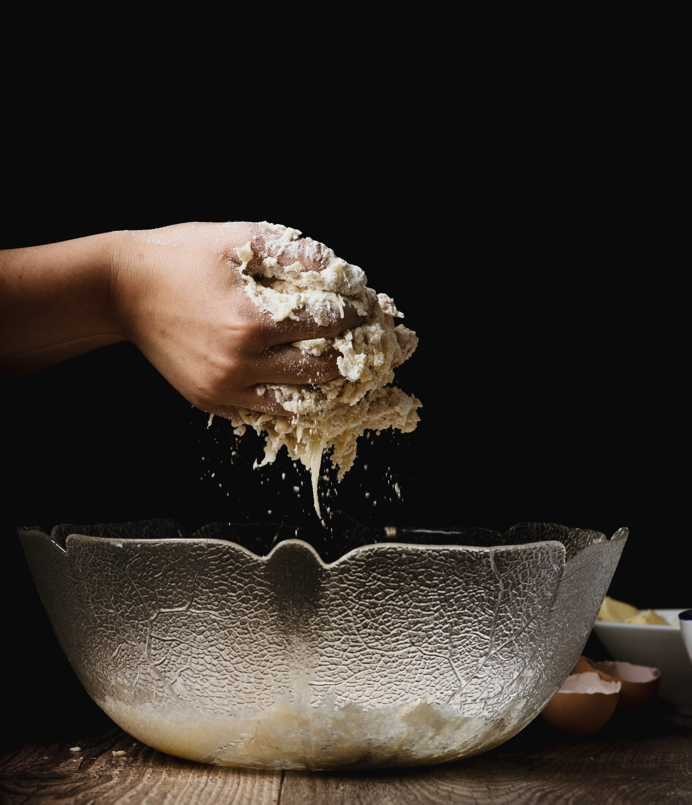
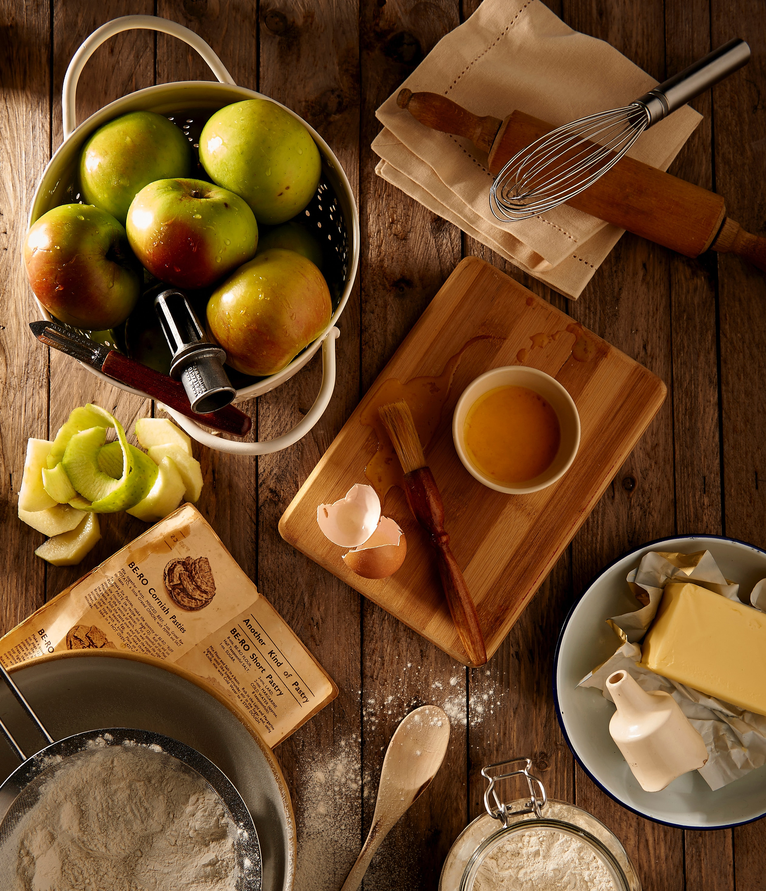
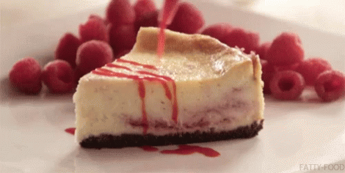
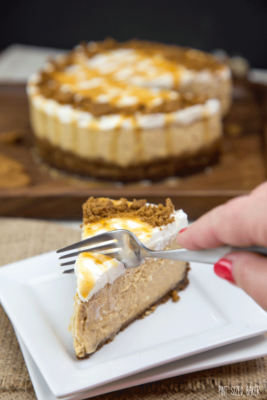
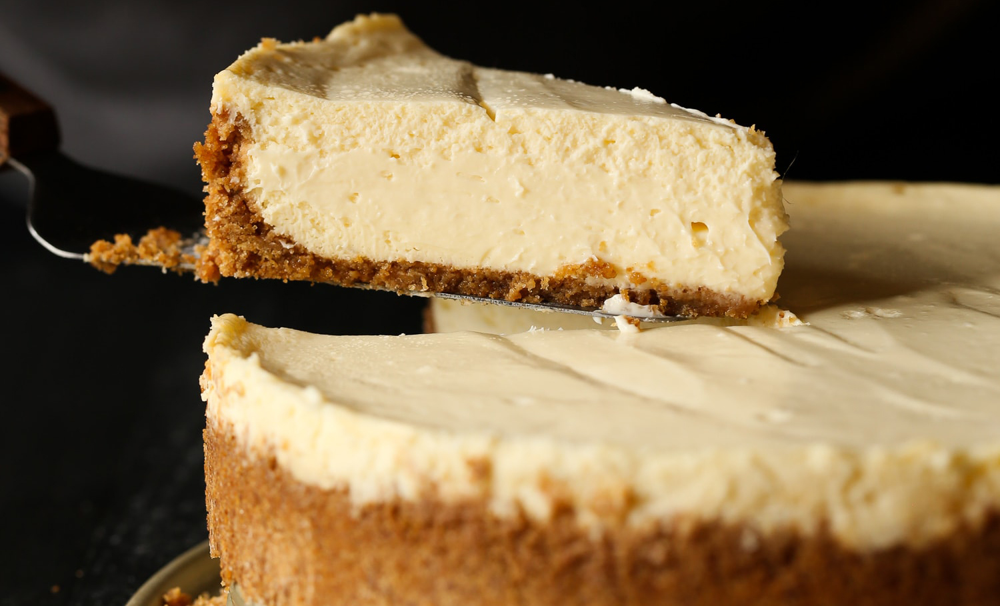
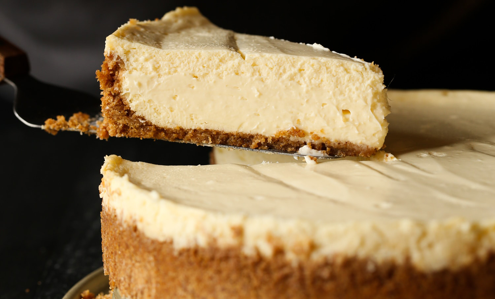

Cheesecake Recipe
This easy cheesecake recipe truly makes perfect cheesecake every time! Each slice has the creamiest, smoothest cheesecake paired with homemade graham cracker crust. The perfect bite! Plus, I’ve included tons of step-by-step instructions with photos so you can make the best cheesecake every time. This is truly the last cheesecake how-to you’ll ever need!
Ingredients
Crust
- 1 3/4 cups Graham Cracker Crumbs (about 15 full crackers)
- 1/3 cup butter, melted
- 1/4 cup granulated sugar
- 1/2 teaspoon kosher salt
Cheesecake
- 4 (8 ounce) packages Cream Cheese, room temperature
- 1 cup granulated sugar
- 1/2 cup sour cream, room temperature
- 2 teaspoons vanilla
- 3 eggs, room temperature


Instructions
Crust
- Preheat oven to 350°F
- In a large bowl mix the graham cracker crumbs, butter, granulated sugar, and salt together evenly.
Press the mixture into the bottom and up the sides of 9-inch springform pan. - Bake the crust for 8-10 minutes, or until lightly golden.
Set aside while you make the cheesecake.

Cheesecake
- In the bowl of your stand mixer fitted with the paddle attachment, mix the cream cheese and sugar on medium speed, until smooth, scraping the sides of the bowl as necessary.
- Turn the mixer to low and add the sour cream and vanilla; mix well, scraping sides of the bowl as necessary. Add the eggs, 1 at a time, mixing on low speed after each addition just until mixed. Don’t over mix. Pour the filling over crust and spread evenly.
- Double wrap the bottom of the springform pan with foil, sealing it tightly to prevent water from getting into the pan.
- Place the springform pan into a larger pan and pour very hot water into the pan, until it’s 3/4- inch deep, careful to make sure the water level doesn’t come up higher than the foil.
- Bake for 60-70 minutes or until the center is almost set. The center will still jiggle while the edges will be set.
- Carefully run a knife around the rim of pan to loosen cake. Allow the cheesecake to cool at room temperature for at least an hour, then cover and transfer into the refrigerator for 6 hours or overnight.
- Release the sides of the springform pan before slicing.

Tips
- Pre-bake your crust!
- Make sure all your ingredients are room temperature
- Don’t over mix your cheesecake!
- Line your pan with foil!
- WATER BATH!
- Don’t over bake!
- Don’t skimp on chill time!
 
